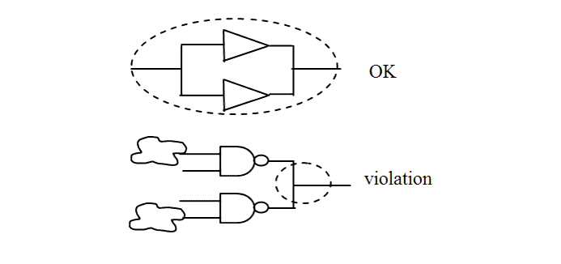
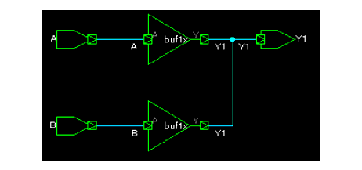

| Description | This rule detects parallel connections that are not supported by PrimeTime. This rule also flags on buffered type connections. To improve timing analysis with PrimeTime, use only the supported parallel connections. |
| Policy | DESIGN |
| Ruleset | STRUCTURE |
| Language | VHDL/Verilog |
| Type | Hardware |
| Severity | Error |
This is an example of invalid Verilog code, followed by a circuit diagram that illustrates the problem:
module ntl_str83_top ; wire net_01, net_02,net_03,net_04; ... buf I1(net_03, net_01); buf I2(net_03, net_01); // OK -- parallel connections with same signals through BUF // can be supported by static timing analysis tool nand I3(net_04, net_01, net_02); nand I4(net_04, net_03, net_02); // NTL_STR83 fires -- parallel connections with different signals // through NAND not be supported by static timing analysis tool ... endmoduleExample
This is an example of a Verilog code, followed by a circuit diagram that illustrates Leda flagging violation on buffered type connections:
module top(...); ... ... ... GTECH_BUF N1(.Y(Y1), .A(A)); GTECH_BUF N2(.Y(Y1), .A(B)); endmodule // NTL_STR83 fires -- parallel connections with different signals // through NAND not be supported by static timing analysis tool ... endmoduleViolation:
4: output Y1,Y2,Y3,Y4,Y5; // FAIL (for Y1, Y2, Y3) ^ STR83_starc.v:4: STRUCT> [ERROR] NTL_STR83: Use only parallel connections that are supported by Primetime top.Y1 --- One driver is top.N2.~buf0 (file: STR83_starc.v, line: 7) --- Another driver is top.N1.~buf0 (file: STR83_starc.v, line: 6)